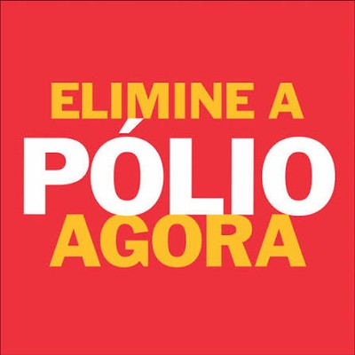
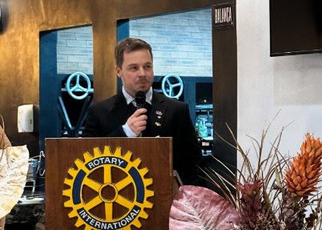
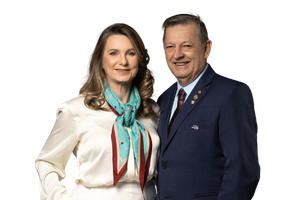

Servir para transformar
Porto União e União da Vitória
Unindo Porto União (SC) e União da Vitória (PR) desde 1949 em ações de serviço, liderança e transformação social.
Áreas de Enfoque do Rotary
Nossos projetos seguem as sete áreas de atuação definidas pelo Rotary International, unindo esforço local a impacto global.

Fundação Rotária · Saúde globalElimine a Pólio Agora
Desde 1985 o Rotary lidera a maior campanha de vacinação voluntária da história. Estamos a um passo de tornar a pólio a segunda doença humana já erradicada do planeta — mas só chegamos lá com a ajuda de todos.
Mais de sete décadas servindo as duas margens do Iguaçu
Fundado em 1949, o Rotary Club de Porto União – União da Vitória reúne líderes e voluntários das duas margens do Rio Iguaçu em torno de um único propósito: servir.
Nossas reuniões são abertas a visitantes
Quer conhecer o clube de perto? Toda semana recebemos rotarianos visitantes, convidados e futuros associados.
Quero visitarDiretoria
Os rotarianos que conduzem o clube neste ano rotário.
Nosso Instagram
Feed do Instagram ainda não configurado. Crie uma conta gratuita em behold.so, conecte o Instagram do clube lá e cole o Feed ID em assets/data/site-data.json → redesSociais.beholdFeedId.
Notícias
O que está acontecendo no nosso clube.
Nossa história
Aos 27 de setembro de 1949, no Cruz Hotel de Porto União, foi instalado oficialmente o Rotary Club de Porto União – União da Vitória.
Primeira diretoria eleita
Sócios-fundadores
Ata de fundação, manuscrita e assinada (1949)
Documento original registrado pelo primeiro secretário do clube. Clique para ampliar.
Liderança rotária

Dr. Stefan Grube Kolb
Dr. Stefan Grube Kolb preside o Rotary Club de Porto União – União da Vitória no ano rotário 2026-2027, conduzindo o clube com dedicação ao lema "Crie Impacto Duradouro".

Moacir Schaly & Maria Cristina Thibes Schaly
Moacir Schaly e Maria Cristina Thibes Schaly, do Rotary Club de Campos Novos (SC), são o Casal Governador do Distrito 4740 no ano rotário 2026-2027.
Olayinka H. Babalola
Advogado e engenheiro, Olayinka Hakeem Babalola integra o Rotary Club de Trans Amadi, na Nigéria, desde 1994.